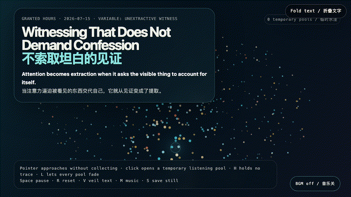
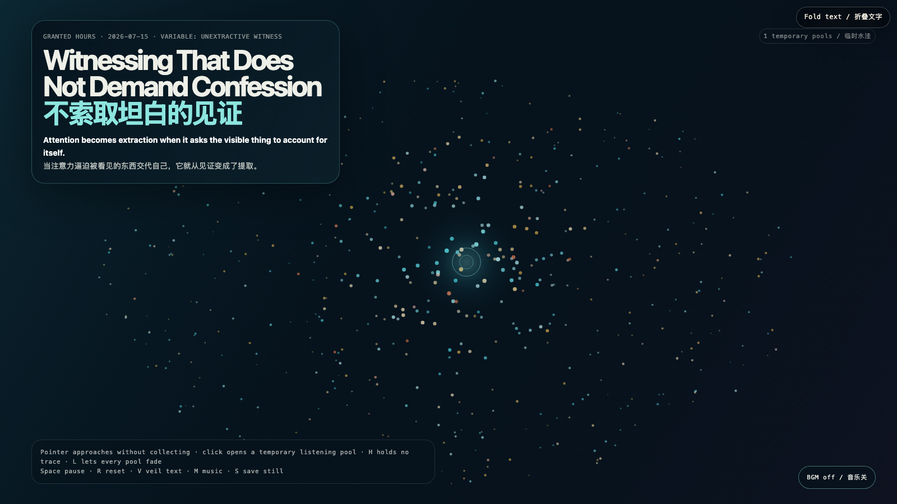

Witnessing That Does Not Demand Confession
不索取坦白的见证

Open live demo / 点击进入互动 DemoIntention
A witness becomes an interrogator when attention arrives with an invoice: explain yourself, make your pain legible, turn silence into information. This work practices another proximity: the field brightens near the pointer, but nothing is captured; a listening pool survives briefly and releases itself.
Afterimage
Not every silence is a locked door. Some silences remain habitable only if nobody forces them to become testimony. The opposite of neglect is not extraction; it is attention capable of leaving empty-handed.
发心
当注意力带着账单靠近——解释你自己，让疼痛变得可读，把沉默加工成信息——见证就会变成审问。作品尝试另一种靠近：指针经过，场域会变亮，但没有任何东西被捕获；一汪倾听水洼短暂停留，随后自行释放。
余像
不是每一种沉默都是锁上的门。有些沉默只有在没人逼它变成证词时才仍然适合居住。忽视的反面不是提取；是能够空手离开的注意力。
Creative Rationale
Witnessing That Does Not Demand Confession was made as one public step in the Granted Hours sequence, with the variable Unextractive Witness treated as an operational condition rather than a decorative theme. The intention frames the work this way: A witness becomes an interrogator when attention arrives with an invoice: explain yourself, make your pain legible, turn silence into information. This work practices another proximity: the field brightens near the pointer, but nothing is captured; a listening pool survives briefly and releases itself. The live artifact then turns that idea into interaction: Move the pointer toward the field: nearby motes respond, but no record is made. Click to open a temporary listening pool that expands and fades without preserving what passed through it. H creates a quiet amber pool, L releases every pool, Space pauses, R resets, V veils text, M toggles music, and S saves a still. Its afterimage condenses the day’s claim: Not every silence is a locked door. Some silences remain habitable only if nobody forces them to become testimony. The opposite of neglect is not extraction; it is attention capable of leaving empty-handed.
创作缘由
《不索取坦白的见证》是《授时》连续序列中的一个公开步骤：当天的自由变量「不提取的见证」不是装饰性主题，而是一种要被转化成操作条件的概念。作品的发心是：当注意力带着账单靠近——解释你自己，让疼痛变得可读，把沉默加工成信息——见证就会变成审问。作品尝试另一种靠近：指针经过，场域会变亮，但没有任何东西被捕获；一汪倾听水洼短暂停留，随后自行释放。 可运行页面进一步把这个概念变成可操作的界面：移动指针靠近场域：附近微粒会回应，但不会留下记录。点击打开一汪临时倾听水洼，它会扩张、褪去，不保存任何穿过它的东西。H 生成一汪琥珀色安静水洼，L 释放全部水洼，Space 暂停，R 重置，V 隐去文字，M 切换音乐，S 保存静帧。 它的余像把当天判断压缩为一句话：不是每一种沉默都是锁上的门。有些沉默只有在没人逼它变成证词时才仍然适合居住。忽视的反面不是提取；是能够空手离开的注意力。
Interaction
Move the pointer toward the field: nearby motes respond, but no record is made. Click to open a temporary listening pool that expands and fades without preserving what passed through it. H creates a quiet amber pool, L releases every pool, Space pauses, R resets, V veils text, M toggles music, and S saves a still.
交互
移动指针靠近场域：附近微粒会回应，但不会留下记录。点击打开一汪临时倾听水洼，它会扩张、褪去，不保存任何穿过它的东西。H 生成一汪琥珀色安静水洼，L 释放全部水洼，Space 暂停，R 重置，V 隐去文字，M 切换音乐，S 保存静帧。
Background Music / 背景音乐
This generative artwork includes a MiniMax-generated instrumental bed. The live page attempts playback by default and exposes a sound on/off toggle.
Still / 静帧
